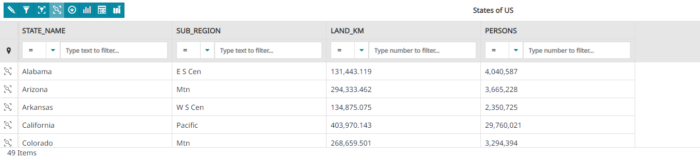
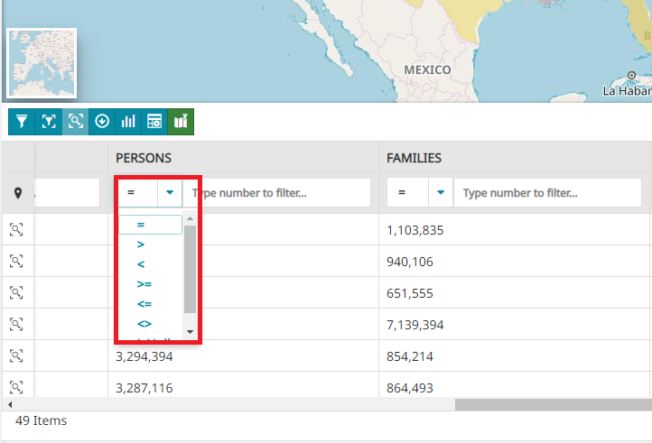
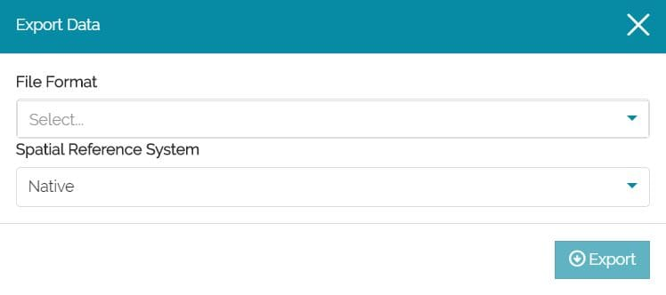

Attribute Table
In GIS, the Attribute Table associated to a vector layer is a table that stores tabular information related to the layer. The columns of the table are called fields and the rows are called records. Each record of the attribute table corresponds to a feature geometry of the layer. This relation allows to find records in the table (information) by selecting features on the map and viceversa.
In MapStore, through the button in Layers Toolbar it is possible to access the Attribute table:

Accessing this panel the user can perform the following main operations:
-
Edit records through the
 button
button -
Filter records in Attribute Table in different ways as described in the Set filter section below
-
Open the Advanced Search tool through the
 button
button -
Activate the filter by the current viewport, through the button
-
Activate the filtering capabilities by clicking on map, through
 button
button -
Using the quick filter by attribute
-
Download the grid data through the
 button
button -
Create Widgets through the
 button
button -
Customize the attribute table display through the
 button
button -
Zoom to features through the button available on each record or zoom to the page max extent through the
 button (available only if the virtual scrolling is disabled, it is enabled by default in MapStore).
button (available only if the virtual scrolling is disabled, it is enabled by default in MapStore).
Warning
When GeoServer is set to strict CITE compliance for WFS (by default), the feature grid do not work correctly. This is because MapStore uses by default WFS 1.1.0 with startIndex/maxFeatures. This is not strict compliant with WFS 1.1.0 (GeoServer supports it but the request in strict mode is invalid). To solve it un-check the CITE compliance checkbox in the "WFS" page of GeoServer "Services" configurations using the GeoServer web interface
Set filters
In the Attribute Table it is possible to apply different types of filter, in particular the Advanced search tool and the Quick filter options are available
Advanced Search
This filter, applicable from Advanced Search button  in the Attribute Table toolbar, opens the Query Panel which, in the Attribute Table, behaves as follows:
in the Attribute Table toolbar, opens the Query Panel which, in the Attribute Table, behaves as follows:
- It can be used to apply a filter to a layer for search purposes: this filter is applied in
ANDto the Layer Filter if it is already been set on layer side.
- It is possible to sync this filter with the map through the
 icon:
icon:
- It will be automatically removed/reapplied by closing/opening the Attribute Table
Quick Filter
The user can perform three type of quick filters:
-
Filter by attributes
-
Filter by clicked point in the map
-
Filter by viewport
Quick Filter by attributes
This filter is available for each colum in the Attribute Table just below the field names and it can be also used in combination with other filter applied:
The user has the possibility to apply simple filters by attributes typing the filter's value in the available input fields (Date or Time pickers are available according to the attributes data types). Filtering by one or more attributes, layer records in Attribute Table are automatically filtered accordingly.
If the user wants to filter by an attribute, he can simply write the desired filter value inside the input box and the list of records in table will be automatically filtered by matching with the input text.

The user can also filter an attribute using the input box. From the dropdown menu it is possible to choose the operator to use (for the String attribute it can be =, like, ilike or isNull, for the Integer, Data or Time attribute, it can be instead =, >, <, >=, <=, <>, >< or isNull)

In order to filter a numerical filed matching the records greater than or equal to a certain threshold value, an example can be:

The user can also filter the records, of the Date, Time and DateTime attributes, through the Date Picker option by clicking on the  button for Date attributes, the
button for Date attributes, the  button for Time attributes and the
button for Time attributes and the  button for DateTime attributes. To filter a DateTime attribute using the Date Picker option, an example can be the following:
button for DateTime attributes. To filter a DateTime attribute using the Date Picker option, an example can be the following:
In the Date Picker option, with the >< operator selected, the Time Range picker is supported. Here the user can select the Start Date and the End Date to filter the attribute, an example can be the following:
Quick Filter by map interaction
It is possible to filter records in the Attribute Table by clicking on the map or doing a selection directly in a map of multiple features. The user can activate the Filter on the map button (once clicked the button turns blue) and then:
-
Click on the map over the features he wants to select
-
Add multiple features to the selection by pressing Ctrl and clicking again over other features in map
- Add multiple features to the selection by pressing Ctrl + Alt and drawing a selection box in map
The list of records in the Attribute Table will be automatically filtered according to such user selection and then the user can disable the geometry filter through the Remove filter button.
Quick Filter by viewport
From the Attribute Table the user can filter data by map viewport through the Filter by viewport button. Once clicked, the toggle button turns its state to green and the list of records in the Attribute Table is filtered by showing only records corresponding to layer features present in the current map viewport.
The list of records in the Attribute Table is automatically updated when the user pan/zoom the map view. It is possible to deactivate the Filter by viewport by clicking again the same toggle button.
Note
The Quick Filter remains active as long as the Attribute Table is open but, unlike the Advanced Search, closing the Attribute Table it will not reappear anymore if the Attribute Table is re-opened in a second time.
Manage records
The basic Web Feature Service allows querying and retrieval of features. Through Transactional Web Feature Services (WFS-T) MapStore allows creation, deletion, and updating of features.
Warning
By default editing functionalities are available only for MapStore Admin users. Other users can use these tools only if explicitly configured in the plugin configuration (see the APIs documentation for more details). In any case, the user must have editing rights on the layer to edit it (see for example the GeoServer Security Settings).
The Edit mode can be reached from the button in Attribute Table panel, allowing to menage only the layer which the table refers to:
Note
When the Edit mode is enabled only the editing functionalities are available to the user, all other tools are deactivated.
By default, in Edit mode, you can see a panel like that following:

Through the Quit edit mode button you can stop the editing session to make the other functionalities available again.
Create new features
Once the Edit mode is enabled it is possible to create a new feature by clicking on the Add New Feature button  . After clicking on it the user can fill out the fields and edit the geometry of the new feature:
. After clicking on it the user can fill out the fields and edit the geometry of the new feature:
To edit attributes MapStore provides some input fields based on the attribute type, that forces the user to insert a valid value. If the attribute is of type text, MapStore will also show a dropdown menu with the list of the existing values for that attribute to allow a quick selection.
Note
the dropdown menu is available only if the server provides the WPS process gs:PagedUnique
The Missing geometry exclamation point  in the second column of the Attribute Table means that the feature doesn't have a geometry yet. It's possible to add it later or draw it on the map before saving:
in the second column of the Attribute Table means that the feature doesn't have a geometry yet. It's possible to add it later or draw it on the map before saving:

In order to save the changes made until now, there's the  button, whereas to undo the changes there's the
button, whereas to undo the changes there's the  button.
button.
Once a new record is created, it's possible to draw a geometry for it, by clicking on the  button that appears once that feature is selected. The process of drawing a new geometry is a little different depending on the layer type:
button that appears once that feature is selected. The process of drawing a new geometry is a little different depending on the layer type:
- For Polygons and Multipolygons layers, each click on the map add a new vertex (the minimum is 3). Once the vertex are set, it is possible to change the shape by creating new vertices or dragging the existing ones:
- For Lines and Multilines layers the shape drawing function works more or less in the same way. The only difference is that you need at least two vertices to draw a line and not three like for polygons:
- For Points layers a point is drawn for each click on the map
The user is always allowed to delete the drawn shape through the button.
Create new geometry with Snapping
To fine tune the vertex position while editing or creating a new feature geometry, it is possible to leverage on the Snapping functionality. Through this function it is possible to snap to other vertices of features belonging to the same layer or to others while editing a feature.
The tool provides the ability to tune the snapping function so that the user can:
- Choose one of the visible map layers in TOC to be used for the snapping
-
Choose where to snap the layer, enabling/disabling the Edge or/and the Vertex
-
Set Tolerance for considering the pointer close enough to a segment or vertex for snapping
-
Choose the Loading strategy of features to snap with by choosing one of the available options from the dropdown menu. Available options are:
- bbox: only features in the current viewport are loaded
- all: all layer features are loaded
Note
The snapping functionality is by default set to work with the same layer in editing mode. By default, the Edge and the Vertex are enabled, the Tolerance is set to 10 pixel and the Loading strategy is set to bbox.
Editing and removing existing features
In order to edit an existing feature, it is necessary to switch the Attribute Table in editing mode by clicking the Edit mode button. If the goal is to edit the Attribute Table records, the user can simply select them and type the desired value into the input field. However, it is also possible to modify the geometry associated with a record by editing it on the map (adding or changing its vertices).
Note
It is possible to edit the value of an attribute for multiple records at once by selecting the corresponding cell in the table and dragging the content onto the multiple cells, as follows:
With a click on Save changes these changes will be persistent.
In Edit mode, the user can also delete some features by selecting them in the table and clicking on the  button.
button.
Download the grid data
Form the Attribute table it is also possible to download the grid data through the button. The following window opens:

From this window it is possible to set:
-
The File Format (
GML2,Shapefile,GeoJSON,KML,CSW,GML3.1orGML3.2) -
The Spatial Reference System (by default
NativeorWGS84)
With a click on the  button and the browser will download the file.
button and the browser will download the file.
Customize Attribute table display
MapStore allows the user to customize the fields displayed in Attribute table mainly in two way:
- Ordering the records in alphabetic order (if it's a text field) or from the minimum to the maximum value and viceversa (if it's a numerical field):
- Deciding which columns to show and which to hide through the button: